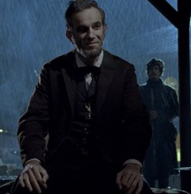
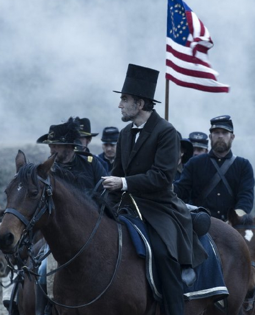

|
I hope everybody who shares this anti-political mood will go out to see "Lincoln,"
directed by Steven Spielberg and written by Tony Kushner. The movie portrays the nobility
of politics in exactly the right way.
It shows that you can do more good in politics than in any other sphere. You can end
slavery, open opportunity and fight poverty. But you can achieve these things only if you
are willing to stain your own character in order to serve others -- if you are willing to
bamboozle, trim, compromise and be slippery and hypocritical.
The challenge of politics lies precisely in the marriage of high vision and low
cunning. Spielberg's Lincoln gets this point. The hero has a high moral vision, but
he also has the courage to take morally hazardous action in order to make that vision a
reality.
To lead his country through a war, to finagle his ideas through Congress, Lincoln feels
compelled to ignore court decisions, dole out patronage, play legalistic games, deceive
|

Abraham Lincoln (Daniel Day-Lewis) listens to Union soldiers
recite the words of the Gettysburg Address. The scene was invented in order to
incorporate a November 1863 event (the Address) into a movie set in early 1865.
|
his supporters and accept the fact that every time he addresses one problem he ends up
creating others down the road.
Politics is noble because it involves personal compromise for the public good. This is
a self-restrained movie that celebrates people who are prudent, self-disciplined,
ambitious and tough enough to do that work.
The movie also illustrates another thing: that politics is the best place to develop
the highest virtues. Politics involves such a perilous stream of character tests: how low
can you stoop to conquer without destroying yourself; when should you be loyal to your
team and when should you break from it; how do you wrestle with the temptations of
fame--that the people who can practice it and remain intact, like Lincoln, Washington or
Churchill, are incredibly impressive.
The movie shows a character-building trajectory, common among great politicians, which
you might call the trajectory from the Gettysburg Address to the Second Inaugural.
In the Gettysburg phase, a leader expresses grand ideas. This, frankly, is relatively
easy. Lots of people embrace grand ideals or all-explaining ideologies. But satisfied with
that they become morally infantile. They refuse to compromise, insult their opponents and
isolate themselves on the perch of their own solipsism.
But a politician like Lincoln takes the next step in the trajectory. He has to deal
with other people. Spielberg's Lincoln does a nice job celebrating an
underappreciated art, the art of legislating.
The movie is about pushing the 13th Amendment through the House of Representatives. The
|

Abraham Lincoln visits the Battlefield of Petersburg,
in a scene from Lincoln
|
political operatives Lincoln hires must pay acute attention to the individual congressmen
in order to figure out which can be appealed to through the heart and which through the
wallet.
Lincoln plays each potential convert like a musical instrument, appealing to one man's
sense of idealism, another's fraternal loyalty. His toughest job is to get the true
believers on his own side to suppress themselves, to say things they don't believe in
order not to offend the waverers who are needed to get the amendment passed.
That leads to the next step in the character-building trajectory, what you might call
the loneliness of command. Toward the end of the Civil War, Lincoln had to choose between
two rival goods, immediate peace and the definitive end of slavery. He had to scuttle a
peace process that would have saved thousands of lives in order to achieve a larger
objective.
He had to discern the core good, legal equality, among a flurry of other issues. He had
to use a constant stream of words, stories, allusions and arguments to cajole people. He
had to live with a crowd of supplicants forever wanting things at the door without feeling
haughty or superior to them.
If anything, the movie understates how hard politics can be. The moral issue here is a
relatively clean one: slavery or no slavery. Most issues are not that simple. The bill in
question here is a constitutional amendment. There's no question of changing this or that
subsection and then wondering how much you've destroyed the whole package.
Politicians who can navigate such challenges really do emerge with the sort of
impressive weight expressed in Lincoln's Second Inaugural. It's a speech that acknowledges
that there is moral ambiguity on both sides. It's a speech in which Lincoln, in the midst
of the fray, is able to take a vantage point above it, embodying a tragic and biblical
perspective on human affairs. Lincoln's wisdom emerges precisely from the fact that he's
damaged goods.
Politics doesn't produce many Lincolns, but it does produce some impressive people, and
sometimes, great results. Take a few hours from the mall. See the movie.
David Brooks praises the new movie Lincoln for illuminating "the nobility of
politics" and, he hopes, inspiring Americans to reconsider their low regard for
politicians. The film depicts Abraham Lincoln's arm-twisting and political maneuvering in
January 1865 to secure approval of the 13th Amendment, which, when ratified by
three-quarters of the states, abolished slavery throughout the nation.
This was indeed an important moment in political history. But Mr. Brooks, and the film,
offer a severely truncated view. Emancipation--like all far-reaching political

Historian Eric Foner
|
change--resulted from events at all levels of society, including the efforts of social
movements to change public sentiment and of slaves themselves to acquire freedom.
The 13th Amendment originated not with Lincoln but with a petition campaign early in
1864 organized by the Women's National Loyal League, an organization of abolitionist
feminists headed by Susan B. Anthony and Elizabeth Cady Stanton.
Moreover, from the beginning of the Civil War, by escaping to Union lines, blacks
forced the fate of slavery onto the national political agenda.
The film grossly exaggerates the possibility that by January 1865 the war might have
ended with slavery still intact. The Emancipation Proclamation had already declared more
than three million of the four million slaves free, and Louisiana, Maryland, Missouri,
Tennessee and West Virginia, exempted in whole or part from the proclamation, had decreed
abolition on their own.
Even as the House debated, Sherman's army was marching into South Carolina, and slaves
were sacking plantation homes and seizing land. Slavery died on the ground, not just in
the White House and the House of Representatives. That would be a dramatic story for
Hollywood.
ERIC FONER
Source: David Brooks and Eric Foner in the New York Times (November 22, 2012 and November 23, 2012).
|